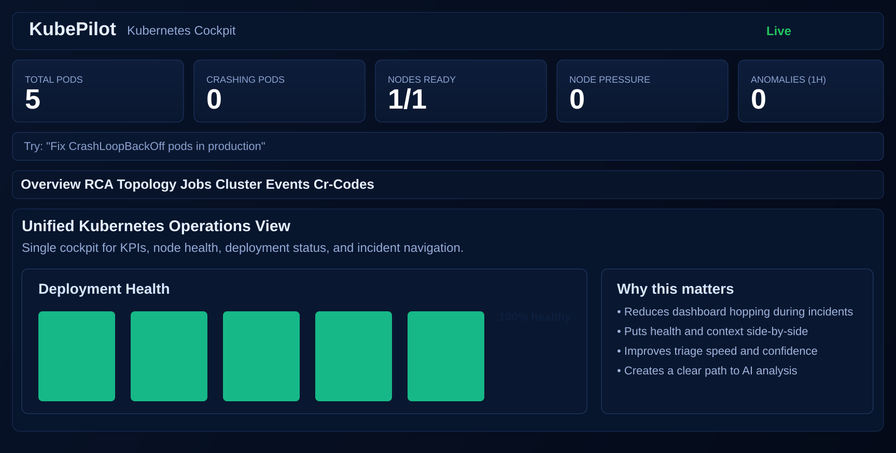
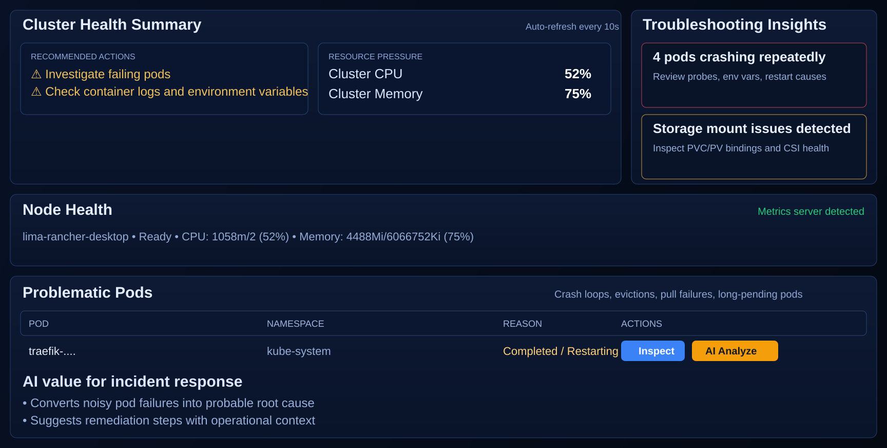
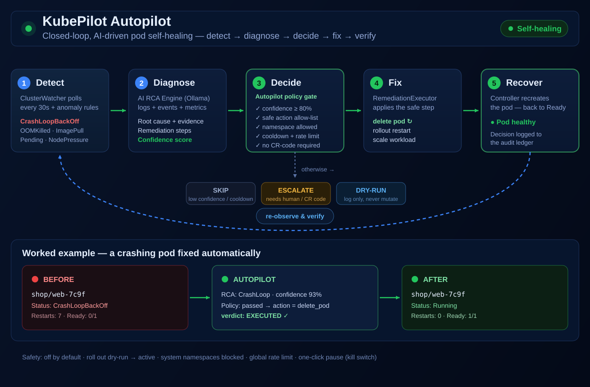

Open Source · Built for SRE, DevOps, and Platform Teams
Resolve Cluster Incidents Faster with AI
KubePilot is a troubleshooting cockpit with three modes:
CoPilot for AI-assisted diagnosis,
Pilot for SRE-style cluster browsing, and
AutoPilot for policy-gated AI fixes —
so teams move from noisy signals to safe action without juggling kubectl tabs.
One cockpit from signal to fix. Ask CoPilot in plain English, browse like an SRE in Pilot, and let AutoPilot preview or apply safe remediations — with local LLMs, durable RCA history, optional Slack alerts, and a native iOS companion.
Product modes
Three Modes. One Faster Incident Loop.
Use AI CoPilot, Pilot, and AutoPilot together to diagnose, inspect, and remediate Kubernetes cluster incidents in minutes instead of hours.
AI CoPilot
Kubernetes CoPilot (AI-Assisted Troubleshooting)
Ask what is broken in plain English. Get root-cause analysis, evidence, and next steps without writing kubectl scripts first.
Benefit: Cut triage time when the cluster is noisy — jump straight from symptoms to a confident diagnosis.
Natural-language AI assistant for cluster questions
One-click AI Analyze on problem pods and events
Automated RCA with evidence chains and confidence
Copy Prompt to reuse diagnoses with your preferred LLM
Anomaly detection for CrashLoop, OOM, ImagePull, node pressure
Works with Ollama and local models — data stays yours
Pilot
Kubernetes Pilot (SRE Troubleshooting)
A Lens/Rancher-style read-only browser for workloads, nodes, logs, YAML, topology, and LAN/WAN visibility when you need to verify the AI.
Benefit: Keep SRE muscle memory in one place — inspect before you act, without switching tools mid-incident.
Cooldowns and hourly caps to prevent remediation storms
One-click pause kill switch for operators
Decision ledger of executed, skipped, escalated, and failed actions
Pairs with CoPilot RCA so fixes follow diagnosed root cause
Faster mean-time-to-resolution
CoPilot explains, Pilot verifies, AutoPilot remediates — less context switching across dashboards, logs, and runbooks.
Safer AI operations
Read-only Pilot defaults, mutation gates, dry-run Autopilot, and CR-code approval for risky actions keep production safer.
Works where you work
Web cockpit plus native iOS companion, widgets, and App Intents — respond to cluster incidents from the desk or on the go.
AI CoPilot RCA
Ask in plain English, run AI Analyze, and get evidence-backed root cause plus remediation steps
Pilot SRE Browser
Workloads, nodes, logs, YAML, topology, and resource gauges for hands-on verification
AutoPilot AI Fixer
Dry-run or active self-healing with confidence floors, rate limits, cooldowns, and kill switch
Pre-Built Runbooks
7 opinionated diagnostic workflows out of the box, plus custom YAML runbooks with live hot-reload
Native iOS Companion
SwiftUI mobile app for alerts, pods, logs, RCA, Face ID, widgets, and Siri shortcuts
LAN / WAN Node IPs
See real LAN, WAN, and WireGuard tunnel addresses instead of only the k3s overlay IP
Live Logs & Events
Fast pod log access, cluster event timelines, anomaly detection, and RCA drill-downs
Security-First Defaults
Optional auth, read-only browsing, mutation gates, and CORS policies for production use
Capabilities
Full Feature Set for Faster Incidents
Everything behind CoPilot, Pilot, and AutoPilot — observability, AI diagnosis, and safer remediation in one open-source platform.
CoPilot — AI-Assisted Troubleshooting
Ask operational questions, run AI Analyze on problem pods, and get root cause, evidence, confidence, risk, commands, YAML fixes, and next steps from your local LLM.
Pilot — SRE Troubleshooting Browser
Browse Deployments, StatefulSets, DaemonSets, Jobs, Services, Ingresses, ConfigMaps, Secrets, and PVCs across namespaces with live YAML and log viewers.
AutoPilot — AI Fixer Self-Healing
Policy-gated remediation in off, dry-run, or active mode. Confidence floors, namespace blocklists, action allow-lists, cooldowns, hourly caps, and a pause kill switch keep automation auditable.
Cluster Resource Gauges
Live CPU, memory, and storage usage with per-StorageClass breakdown. Longhorn-aware for accurate physical disk readings, not just bound PVC totals.
Native iOS Troubleshooting
A SwiftUI mobile app connects to the same KubePilot APIs for health cards, pod search, pod detail tabs, live logs, events, RCA reports, Face ID, widgets, and Siri/App Intents.
Runbooks & YAML Workflows
7 pre-built diagnostic workflows ship in the box. Drop YAML runbooks into a directory for fsnotify-driven hot reload — user runbooks override builtins by ID.
LAN, WAN & Tunnel Node IPs
Node views classify private LAN/VPC addresses, public WAN addresses, and WireGuard or flannel tunnel endpoints using Kubernetes addresses plus k3s and flannel annotations.
Pod Detail Workbench
Open a pod to inspect overview, containers, events, logs, sanitized YAML, metrics context, restart counts, uptime, and AI analysis without jumping between kubectl commands.
Pod & Service Port-Forwarding
Open a tunnel into the cluster directly from the UI and reach the forwarded port through the dashboard reverse-proxy. Sessions are listed, cancellable, and auditable.
Durable RCA History (SQLite)
Optional embedded SQLite store persists RCA reports and anomalies across restarts. Configurable retention, WAL journaling, no CGO — same single binary.
Alerts, Events & RCA Timeline
Review warnings, normal events, anomalies, and RCA reports as a searchable operational timeline. Slack notifications can post formatted incident cards for high-severity findings.
Service Topology Map
ArgoCD-style canvas links Ingress to Service to Workload to Pod with status colours, ports, and external IPs. Switch namespaces without leaving the page.
Copy Prompt & AI Health
Copy the exact CoPilot prompt from any analysis surface, and check the AI health chip so you know Ollama is ready before an incident depends on it.
Multi-Cluster Switching
Upload kubeconfigs, switch contexts, and route every dashboard query to the new cluster — no restart required.
Security-First Design
Optional auth, read-only defaults, mutation gates, CR-code approval for risky actions, and CORS policies. Safe for production from day one.
MCP Agent Protocol
Built-in MCP server for multi-cluster agent orchestration, remote AI coordination, and programmatic access.
How it works
From Signal to Fix in Four Steps
CoPilot diagnoses, Pilot verifies, AutoPilot remediates — a clear loop that reduces mean-time-to-resolution.
Spot Issues
Use Pilot gauges, events, iOS widgets, or alerts to identify warnings, resource pressure, not-ready nodes, and failing pods at a glance.
Ask CoPilot
Run AI Analyze or ask in plain English for root cause, evidence, confidence, risk, commands, YAML fixes, and next steps.
Verify in Pilot
Drill into pods, logs, YAML, topology, and node LAN/WAN details to confirm the diagnosis before you change anything.
Fix with AutoPilot
Preview in dry-run or apply in active mode when policy allows — with kill switch, cooldowns, and a full decision ledger.
Screenshots
See It in Action
The KubePilot dashboard and native app keep incident context in one place.

Pilot overview — cluster KPIs, resource gauges, node readiness, deployment health, LAN/WAN node IP visibility, and quick navigation.

CoPilot — cluster events, health summary, problematic pods, and one-click AI-assisted troubleshooting.

AutoPilot (AI Fixer) — how an anomaly travels from detection through AI root-cause analysis, policy gates, and confidence floors to an audited remediation action.
Install
Up and Running in Minutes
Choose the installation method that fits your workflow.
git clone https://github.com/bwalia/kubepilot.git
cd kubepilot
make dashboard-install && make dashboard && make build
KUBEPILOT_KUBECONFIG="$HOME/.kube/config" ./dist/kubepilot serve --dashboard-port=8383
cd ios
brew install xcodegen
./generate.sh
open KubePilot.xcodeproj
# Connect the app to your running KubePilot server:
# http://<your-mac-or-server-ip>:8383
Ready to Troubleshoot Kubernetes Faster?
Use AI CoPilot, Pilot, and AutoPilot to resolve cluster incidents faster — open source, local-LLM friendly, and built for teams that want diagnosis and safe automation without vendor lock-in.